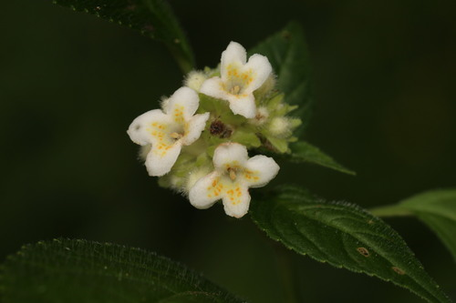

Carlemanniaceae
Carlemannia Family
Carlemanniaceae is a very small family of flowering plants in the order Lamiales, comprising only two genera of perennial herbs and subshrubs native to tropical and subtropical Asia. They are recognized by their opposite leaves that are often unequal in size (anisophyllous), zygomorphic (bilaterally symmetrical) flowers typically bearing only two fertile stamens, an inferior ovary, and fruit in the form of a capsule. Their exact phylogenetic position within the large Lamiales order has been debated but molecular data place them distinctly within the order.
Overview
Carlemanniaceae is a minor family within the large and diverse order Lamiales, belonging to the Lamiid clade of Asterids. It contains only two genera, Carlemannia and Silvianthus, and a total of about five species. These plants are restricted to moist, shaded habitats in tropical and subtropical regions of Asia, ranging from the Eastern Himalayas through southern China, Southeast Asia, and Sumatra.
Members are perennial herbs or softly woody subshrubs, often growing from rhizomes. They are readily identified by the combination of opposite leaves which are frequently unequal in size within a pair (anisophyllous), zygomorphic flowers with fused petals, the presence of only two fertile stamens, and an inferior, 2-locular ovary that develops into a capsule. This set of characteristics distinguishes them from other families in the Lamiales.
The family has no significant economic importance. Its interest lies primarily in its unique combination of morphological traits and its phylogenetic position, which molecular studies suggest is somewhat isolated within the Lamiales, potentially near Oleaceae or as an early-diverging lineage within the order.
Quick Facts
- Scientific Name: Carlemanniaceae Airy Shaw
- Common Name: Carlemannia family (No established English common name)
- Number of Genera: 2 (Carlemannia, Silvianthus)
- Number of Species: Approximately 5
- Distribution: Tropical & Subtropical Asia (E Himalayas, S China, Indochina, Sumatra)
- Evolutionary Group: Eudicots - Asterids (Lamiids) - Order Lamiales
Key Characteristics
Growth Form and Habit
Perennial herbs or subshrubs (weakly woody at the base), often growing from underground rhizomes. Stems are typically erect or ascending, sometimes branched.
Leaves
Leaves are arranged oppositely on the stem and are simple and petiolate. A distinctive feature is that pairs of leaves are often strongly anisophyllous, with one leaf being significantly larger than the other at the same node. Leaf blades are typically ovate to elliptic with serrated or dentate margins. Stipules are absent (exstipulate).
Inflorescence
Inflorescences are terminal or axillary cymes, which are frequently condensed or congested into dense, head-like (capitate), spike-like, or umbel-like clusters. Small bracts are usually present.
Flowers
Flowers are bisexual and distinctly zygomorphic (bilaterally symmetrical). They are typically 4-merous (in Carlemannia) or 5-merous (in Silvianthus). Key features include:
- Calyx: Composed of 4 or 5 small sepals, fused at the base, usually triangular or lanceolate, and persistent in fruit.
- Corolla: Consists of 4 or 5 petals fused into a tube (sympetalous) with spreading lobes. The tube may be straight, curved, or swollen/spurred at the base. Lobes are unequal, reflecting the zygomorphy. Color is typically white, pinkish, or yellowish.
- Androecium: Characteristically possesses only 2 fertile stamens (the posterior pair). These are inserted on the corolla tube (epipetalous), alternating with the upper/adaxial corolla lobes. Filaments are short, and the anthers are often positioned close together or touching (connivent). Depending on the species, 0, 2, or 3 small staminodes (sterile stamens) may also be present.
- Gynoecium: The ovary is inferior and composed of 2 fused carpels, forming a 2-locular structure. Each locule contains numerous small ovules attached to fleshy axile placentas. There is a single, slender terminal style topped by a capitate (head-like) or shortly 2-lobed stigma.
Fruits and Seeds
The fruit is a capsule containing numerous seeds. In Carlemannia, the capsule is typically dry and dehisces septicidally (along the septa) into 2 or 4 valves. In Silvianthus, the capsule wall is fleshy and berry-like, dehiscing irregularly or remaining indehiscent. Seeds are very small, ovoid or angled, with a reticulate surface and contain endosperm.
Chemical Characteristics
As members of Lamiales, they likely produce iridoid compounds, which are common defense chemicals in this order. However, detailed chemical profiles are not widely reported or used as primary identifying features for the family itself.
Field Identification
Identifying Carlemanniaceae relies on recognizing its unusual combination of features within the Lamiales order, coupled with its restricted geographic distribution in Asia.
Primary Identification Features
- Habit: Perennial herb or subshrub, often rhizomatous.
- Opposite Leaves, Often Anisophyllous: Pairs of leaves at a node are frequently unequal in size.
- Zygomorphic Flowers: Flowers are bilaterally symmetrical.
- Two Fertile Stamens: Only two stamens produce pollen.
- Inferior Ovary: Ovary located below the attachment of petals and sepals.
- 2-Locular Ovary/Capsule: Ovary and resulting capsule have two chambers.
- Restricted Distribution: Found only in tropical/subtropical Asia (Himalayas to SE Asia).
Secondary Identification Features
- Simple Leaves with Serrated Margins: Leaf blades are undivided and usually toothed.
- Dense Cymes: Inflorescences often appear condensed or head-like.
- Capsular Fruit: Fruit is a capsule (though may be fleshy or dry).
- Exstipulate Leaves: Stipules are absent.
Seasonal Identification Tips
- Growing Season: Look for flowering and fruiting during favorable monsoon or warmer periods in their habitat.
- Vegetative State: The opposite, unequal leaves on herbaceous or subshrubby stems are key vegetative clues. Check for rhizomes if possible.
Common Confusion Points
- Rubiaceae: Many are herbs/shrubs with opposite leaves and inferior ovaries, but Rubiaceae typically have interpetiolar stipules, usually actinomorphic flowers, and often 4 or 5 stamens.
- Gesneriaceae: Many have opposite leaves (sometimes anisophyllous) and zygomorphic flowers with 2 or 4 stamens, but the ovary is usually superior or half-inferior, and typically 1-locular with parietal placentation.
- Acanthaceae / Scrophulariaceae / related Lamiales: Many have opposite leaves and zygomorphic flowers, but usually possess a superior ovary and often have 4 stamens (or 2 stamens + 2 staminodes).
- Oleaceae: While potentially related phylogenetically, Oleaceae typically have actinomorphic flowers, usually 2 stamens, but a superior ovary.
Field Guide Quick Reference
Look For:
- Herb/Subshrub habit
- Opposite leaves (often unequal)
- Zygomorphic flowers
- 2 Fertile Stamens
- Inferior Ovary (2-locular)
- Capsule fruit
- Asia distribution
Key Variations:
- Flowers 4-merous vs. 5-merous
- Capsule dry vs. fleshy
- Inflorescence open vs. condensed
- Degree of leaf anisophylly
Notable Examples
This very small family consists of only two recognized genera, confined to specific regions in Asia.

Carlemannia species (e.g., C. griffithii)
Carlemannia
The type genus, comprising perennial herbs typically found in the Himalayas, southern China, and Indochina. Characterized by strongly anisophyllous leaves, dense terminal or axillary cymes, 4-merous flowers (4 sepals, 4 corolla lobes, 2 stamens), and a dry capsule that splits into valves.

Silvianthus species (e.g., S. bracteatus)
Silvianthus
The second genus, consisting of subshrubs found from the Eastern Himalayas to Myanmar, Thailand, and Sumatra. Leaves are opposite and often unequal. Inflorescences are dense, head-like, often subtended by conspicuous bracts. Flowers are 5-merous (5 sepals, 5 corolla lobes, 2 stamens). The fruit is a distinctive fleshy, white, berry-like capsule.
Phylogeny and Classification
Carlemanniaceae is classified within the large order Lamiales, part of the Lamiid clade of Asterids. Its exact position within this order was historically uncertain due to its unique combination of morphological features (especially the inferior ovary, uncommon in core Lamiales). Early classifications sometimes placed it near Caprifoliaceae or Rubiaceae (both with inferior ovaries but in different orders or distant within Lamiales).
Molecular phylogenetic studies using DNA data have firmly established Carlemanniaceae within Lamiales. Its precise relationships remain somewhat debated, but evidence often places it either near Oleaceae (Olive family) or as sister to a large clade containing many major Lamiales families (excluding Oleaceae, Plocospermataceae etc.), suggesting it might represent an relatively early-diverging lineage within the order. It is clearly distinct from the families it superficially resembles based on ovary position.
Position in Plant Phylogeny
- Kingdom: Plantae
- Clade: Angiosperms (Flowering plants)
- Clade: Eudicots
- Clade: Asterids (Lamiids / Euasterids I)
- Order: Lamiales
- Family: Carlemanniaceae
Evolutionary Significance
Despite its small size, Carlemanniaceae is interesting from an evolutionary perspective:
- Unique Character Combination: It showcases an unusual mix of features within Lamiales (zygomorphic flowers, 2 stamens like some derived groups, but an inferior ovary which is rare in the order outside Caprifoliaceae sensu lato in Dipsacales).
- Phylogenetic Placement: Its somewhat isolated position highlights the complexity of relationships within Lamiales and the role of molecular data in placing morphologically ambiguous groups. It may represent an older lineage preserving certain traits.
- Biogeography: Its restricted distribution in subtropical/tropical Asia contributes to understanding the historical diversification and spread of the Lamiales order in that region.
- Anisophylly: The common occurrence of unequal leaf pairs is an interesting developmental feature studied in plant morphology.